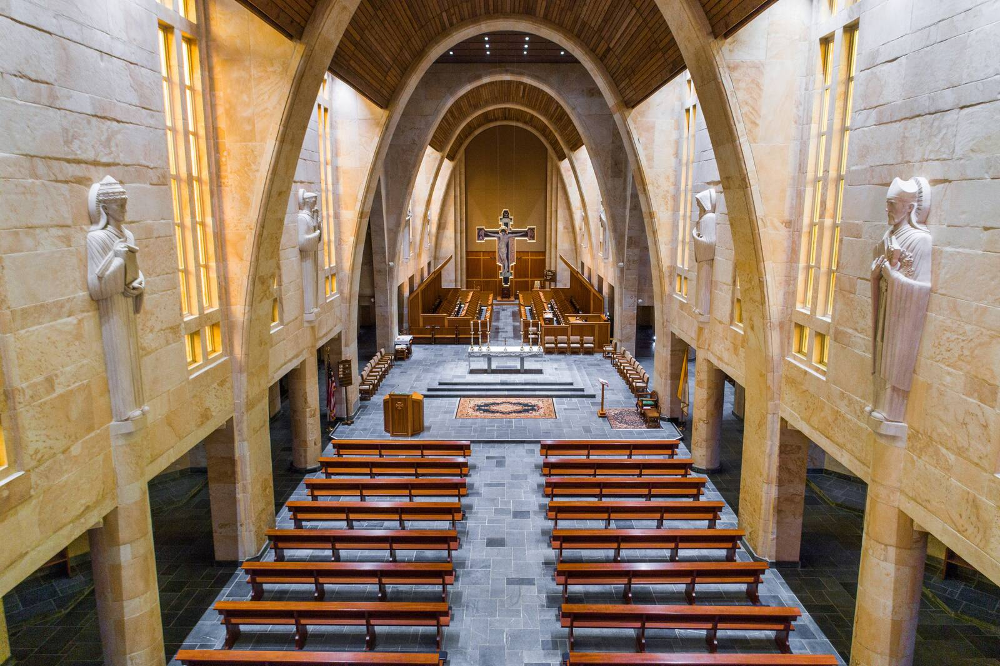

The Oldest Conversation
For about three thousand years, people have sung the Psalms to God. For some fifteen hundred years, Benedictine monks have kept that conversation going day and night. Here at Saint Bernard, we still do, morning, noon, evening, and night, praying for the whole world, and for you. You can sing along, or just sit and listen.
No membership. No fees. No strings. Nothing you have to believe first.
“Freely you received, so freely give.” Matthew 10:8
Would you like to join in?
Choose the door that fits you.
You can always come back and open another door.

You are welcome here
Early in the morning, often before the sun is up, a bell rings over this hill, and the monks of Saint Bernard file into this church in their black habits. They sing. At midday the bell rings again, and they lay down their work and come back. Again at evening. Once more as night falls, before the great silence. Day after day, year after year, the monks of this abbey fill their days with prayer. And the songs they sing are the Psalms: the 150 prayer-songs at the heart of the Bible, the same songs Jesus prayed.
And you are welcome here. Whenever you need prayer, come and pray with us. Come to God with us. Bring your intentions with you: the friend who is sick, the worry that wakes you at night, the thanks you never got around to saying. Your presence strengthens us, and we will strengthen you, as we all go to God together. See the prayer times.
“Contemplative prayer … in my opinion is nothing else than a close sharing between friends; it means taking time frequently to be alone with him who we know loves us.”